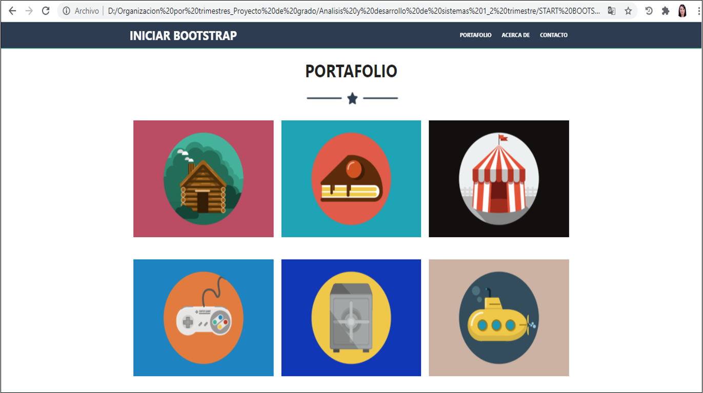
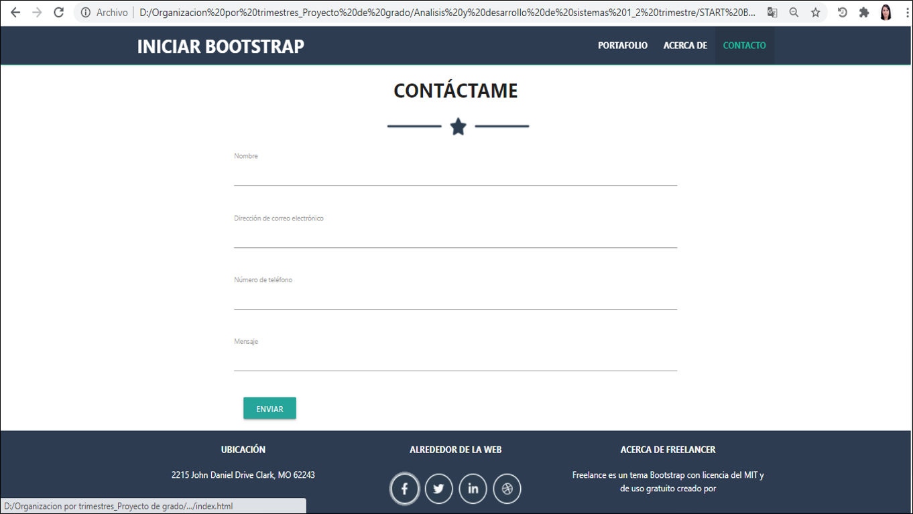
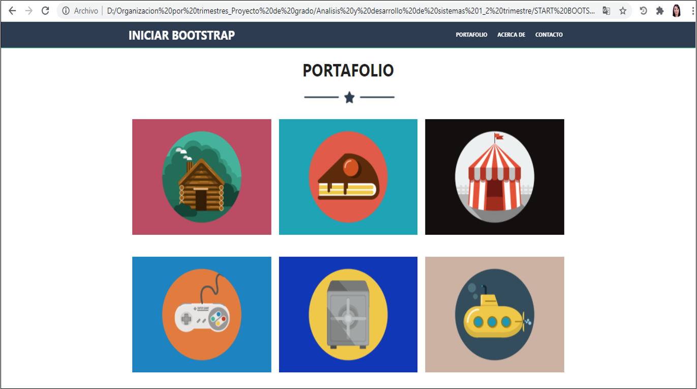
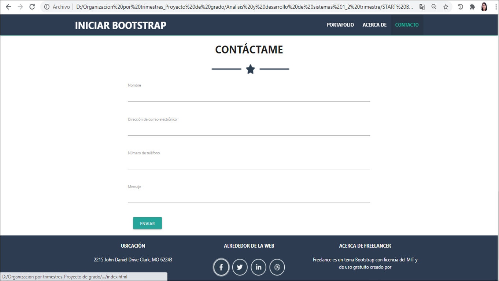
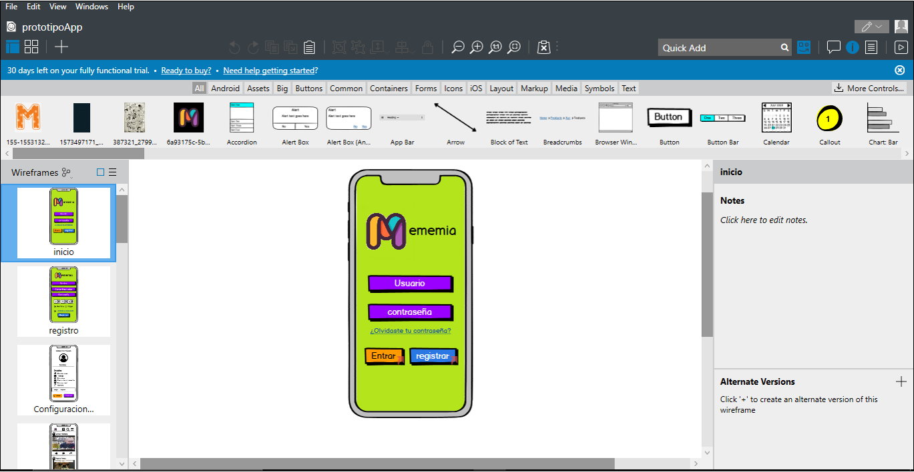
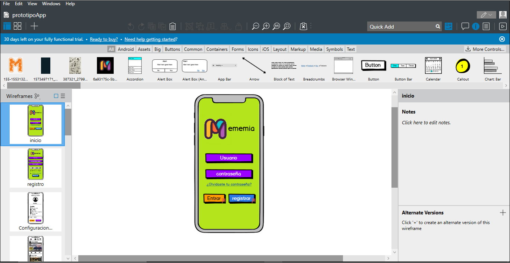

- -Creación de un portal web, el cual tendrá acceso, administrativos, aprendices y personal de seguridad.
- -Recolección de información, como datos personales y sus respectivos vehículos.
- -Implementar una plataforma que brinde seguridad en cuanto a los ingresos y las salidas de los vehículos del CEET. del centro.
- -Crear un mejor control en cuanto al manejo del parqueadero del CEET y mejorar los tiempos de espera.
- -Que la información manejada sea verídica y precisa.
- -Crear una base de datos con la cual se puedan controlar los ingresos y salidas
Planteamiento Del Problema
El personal de seguridad no cuenta con un sistema sistematizado o avanzado para el control de acceso por las entradas vehiculares, ya que es un sistema totalmente manual y arcaico en el cual no se puede realizar un seguimiento eficiente de la entrada de vehículos.
¿Qué tipo de sistema se debe implementar?
¿El actual sistema es eficiente y seguro?
¿Existe algún reporte, si algún vehículo desaparece o se extravía?
Alcance Del Proyecto
El alcance principal está orientado a la creación de un portal o sistema de información que esté orientado en la mejora de accesibilidad a las instalaciones del CEET. Si el proyecto es un éxito es poder lograr implementar este portal en todos los centros a nivel nacional.
Justificación Del Proyecto
La justificación del sistema SCAS (Sistema de Control de Acceso SENA) viene motivada por la necesidad de disponer un control en las instalación del CEET para aumentar la seguridad en el mismo y dificultar los accesos no autorizados, el sistema estaría implementado en las entradas vehiculares de las instalaciones para que el control sea ordenado y preciso.
Este sistema seria aplicado a todos los componentes de nuestra institución como aprendices, instructores, administrativos y por último a los proveedores, para llevar un ordenado ingreso de todo este personal, para las personas que pertenecen en nuestra familia SENA, por medio de un carnet que generará nuestro portal web el cual contendrá los datos del usuario e incluido un código QR o código de barras, por el cual nuestro de personal de seguridad realizará la validación mediante una aplicación instalada en celulares, o con lector de códigos de barras. Así creará una entrada más segura, se manejará un control más preciso de los vehículos y los dueños de estos mismos.
Levantamiento de Información
Para la recolección de información acerca de la creación del sistema para el parqueadero del SENA, se utilizaron las técnicas de encuesta y entrevista, aplicadas a la población involucrada con dicho sistema, recopilando opiniones, conductas y características de las personas que acceden al parqueadero.
Los técnicas que utilizamos para el levantamiento de información fueron:
Entrevista:
Este instrumento o técnica fue utilizado para conocer de forma oral y personalizada el funcionamiento del lugar y así crear los requisitos correspondientes al sistema, esta fue aplicada a los celadores quienes, con su conocimiento y experiencias en su labor de control en el parqueadero, fueron fundamentales para determinar el enfoque del proyecto.
Encuesta:
Consistió en elaborar un cuestionario para ser aplicada específicamente a los usuarios del parqueadero de las instalaciones del SENA y de esta manera estudiar la viabilidad del proyecto o restructurar puntos clave en el desarrollo del sistema.
Entrevista
Decidimos realizar la entrevista como levantamiento de información para nuestro proyecto SCAS ya que es una técnica de gran utilidad en la investigación cualitativa para recabar datos.
Se sostiene una conversación con las personas a las cuales se les realizo la entrevista con el fin de obtener un fin determinado, el cual es tener la información completa y más argumentos necesarios para nuestro proyecto final.
Se realiza el levantamiento de la información a las siguientes personas:
1. Las personas que van ingresando al CEET tanto administrativos como usuarios corrientes.
2. Las personas de vigilancia las cuales manejan muy bien el proceso de ingreso y salida del CEET.
3. Personal del aseo y área administrativa.
4. Personal externo al CEET pero que se encarga de la venta de diferentes tipos de comida para el personal que ingresa y sale del centro.
5. Aprendices del CEET que van ingresando en ese momento.
En este levantamiento de información se entrevistan 10 personas (se adjunta evidencia de la visita realizada al CEET)
Se cargan algunas de las preguntas que se realizaron a dichos usuarios entrevistados para el levantamiento de información.
Actividades Realizadas
Start Bootstrap

 



Historias de Usuario
Las historias de usuario son descripciones, siempre muy cortas y esquemáticas, que resumen la necesidad concreta de un usuario al utilizar un producto o servicio, así como la solución que la satisface.
Como muchas otras herramientas Ágiles, las historias de usuario surgieron como una respuesta orientada al sector de desarrollo de software, aunque con el tiempo se están aplicando a otros tipos de negocio.
Su función principal es identificar problemas percibidos, proponer soluciones y estimar el esfuerzo que requieren implementar las ideas propuestas.
La Brasa Roja


Noticias y más Prototipos
 
